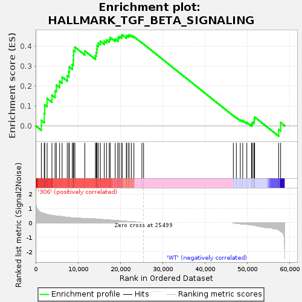
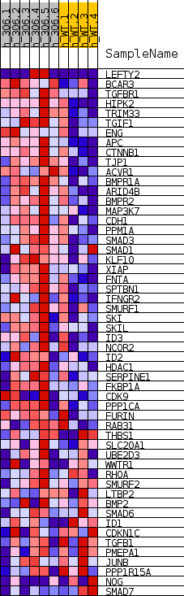
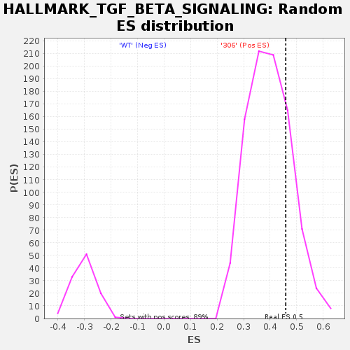

| | | Dataset | 306_WT_express.306_WT.cls#306_versus_WT |
| Phenotype | 306_WT.cls#306_versus_WT |
| Upregulated in class | 306 |
| GeneSet | HALLMARK_TGF_BETA_SIGNALING |
| Enrichment Score (ES) | 0.45855287 |
| Normalized Enrichment Score (NES) | 1.1589204 |
| Nominal p-value | 0.21099888 |
| FDR q-value | 0.52644795 |
| FWER p-Value | 1.0 |
Table: GSEA Results Summary

Fig 1: Enrichment plot: HALLMARK_TGF_BETA_SIGNALING
Profile of the Running ES Score & Positions of GeneSet Members on the Rank Ordered List
| SYMBOL | TITLE | RANK IN GENE LIST | RANK METRIC SCORE | RUNNING ES | CORE ENRICHMENT | | 1 | LEFTY2 | NNN | 1345 | 0.704 | 0.0276 | Yes |
| 2 | BCAR3 | NNN | 2031 | 0.646 | 0.0622 | Yes |
| 3 | TGFBR1 | NNN | 2157 | 0.631 | 0.1053 | Yes |
| 4 | HIPK2 | NNN | 2713 | 0.579 | 0.1374 | Yes |
| 5 | TRIM33 | NNN | 3848 | 0.507 | 0.1544 | Yes |
| 6 | TGIF1 | NNN | 4591 | 0.482 | 0.1763 | Yes |
| 7 | ENG | NNN | 4890 | 0.472 | 0.2051 | Yes |
| 8 | APC | NNN | 5660 | 0.456 | 0.2247 | Yes |
| 9 | CTNNB1 | NNN | 6257 | 0.428 | 0.2452 | Yes |
| 10 | TJP1 | NNN | 7462 | 0.379 | 0.2519 | Yes |
| 11 | ACVR1 | NNN | 7838 | 0.367 | 0.2718 | Yes |
| 12 | BMPR1A | NNN | 7947 | 0.364 | 0.2961 | Yes |
| 13 | ARID4B | NNN | 8661 | 0.350 | 0.3090 | Yes |
| 14 | BMPR2 | NNN | 8892 | 0.344 | 0.3297 | Yes |
| 15 | MAP3K7 | NNN | 8950 | 0.342 | 0.3533 | Yes |
| 16 | CDH1 | NNN | 8965 | 0.342 | 0.3775 | Yes |
| 17 | PPM1A | NNN | 9275 | 0.331 | 0.3960 | Yes |
| 18 | SMAD3 | NNN | 11619 | 0.285 | 0.3766 | Yes |
| 19 | SMAD1 | NNN | 14127 | 0.270 | 0.3533 | Yes |
| 20 | KLF10 | NNN | 14313 | 0.265 | 0.3692 | Yes |
| 21 | XIAP | NNN | 14461 | 0.262 | 0.3855 | Yes |
| 22 | FNTA | NNN | 14494 | 0.261 | 0.4037 | Yes |
| 23 | SPTBN1 | NNN | 14793 | 0.253 | 0.4167 | Yes |
| 24 | IFNGR2 | NNN | 15279 | 0.243 | 0.4259 | Yes |
| 25 | SMURF1 | NNN | 16212 | 0.221 | 0.4259 | Yes |
| 26 | SKI | NNN | 16743 | 0.209 | 0.4319 | Yes |
| 27 | SKIL | NNN | 17388 | 0.193 | 0.4348 | Yes |
| 28 | ID3 | NNN | 17592 | 0.188 | 0.4448 | Yes |
| 29 | NCOR2 | NNN | 18791 | 0.164 | 0.4362 | Yes |
| 30 | ID2 | NNN | 19433 | 0.150 | 0.4360 | Yes |
| 31 | HDAC1 | NNN | 19474 | 0.148 | 0.4460 | Yes |
| 32 | SERPINE1 | NNN | 19849 | 0.142 | 0.4497 | Yes |
| 33 | FKBP1A | NNN | 20360 | 0.128 | 0.4502 | Yes |
| 34 | CDK9 | NNN | 20407 | 0.127 | 0.4586 | Yes |
| 35 | PPP1CA | NNN | 21415 | 0.103 | 0.4488 | No |
| 36 | FURIN | NNN | 21537 | 0.100 | 0.4539 | No |
| 37 | RAB31 | NNN | 21998 | 0.090 | 0.4525 | No |
| 38 | THBS1 | NNN | 22060 | 0.088 | 0.4578 | No |
| 39 | SLC20A1 | NNN | 22596 | 0.079 | 0.4544 | No |
| 40 | UBE2D3 | NNN | 23209 | 0.064 | 0.4485 | No |
| 41 | WWTR1 | NNN | 25098 | 0.017 | 0.4176 | No |
| 42 | RHOA | NNN | 25496 | 0.000 | 0.4109 | No |
| 43 | SMURF2 | NNN | 46690 | -0.006 | 0.0508 | No |
| 44 | LTBP2 | NNN | 47407 | -0.032 | 0.0409 | No |
| 45 | BMP2 | NNN | 48338 | -0.065 | 0.0297 | No |
| 46 | SMAD6 | NNN | 48918 | -0.088 | 0.0262 | No |
| 47 | ID1 | NNN | 49887 | -0.101 | 0.0169 | No |
| 48 | CDKN1C | NNN | 51003 | -0.144 | 0.0083 | No |
| 49 | TGFB1 | NNN | 51169 | -0.152 | 0.0164 | No |
| 50 | PMEPA1 | NNN | 51545 | -0.167 | 0.0220 | No |
| 51 | JUNB | NNN | 51629 | -0.171 | 0.0328 | No |
| 52 | PPP1R15A | NNN | 51726 | -0.176 | 0.0438 | No |
| 53 | NOG | NNN | 57402 | -0.480 | -0.0183 | No |
| 54 | SMAD7 | NNN | 57867 | -0.594 | 0.0164 | No |
Table: GSEA details [plain text format]

Fig 2: HALLMARK_TGF_BETA_SIGNALING
Blue-Pink O' Gram in the Space of the Analyzed GeneSet

Fig 3: HALLMARK_TGF_BETA_SIGNALING: Random ES distribution
Gene set null distribution of ES for HALLMARK_TGF_BETA_SIGNALING